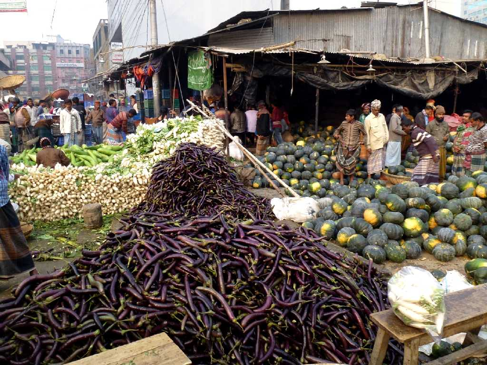
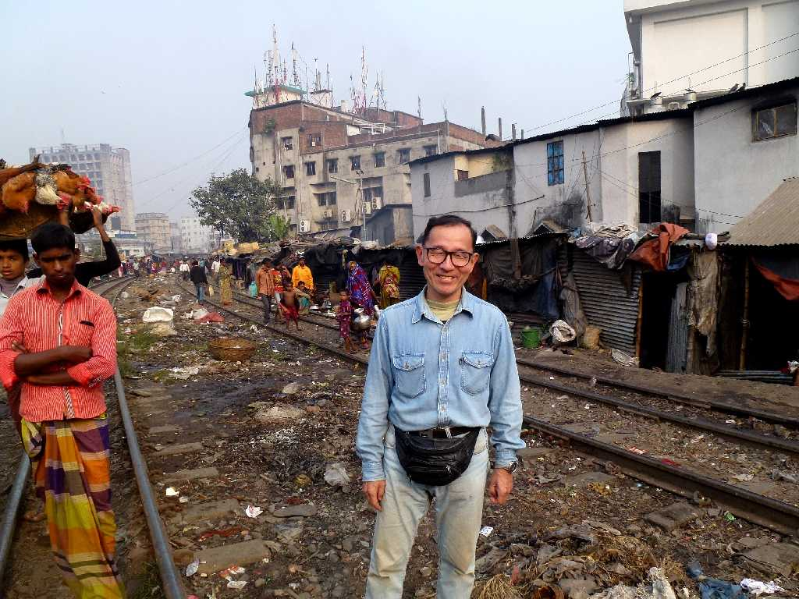
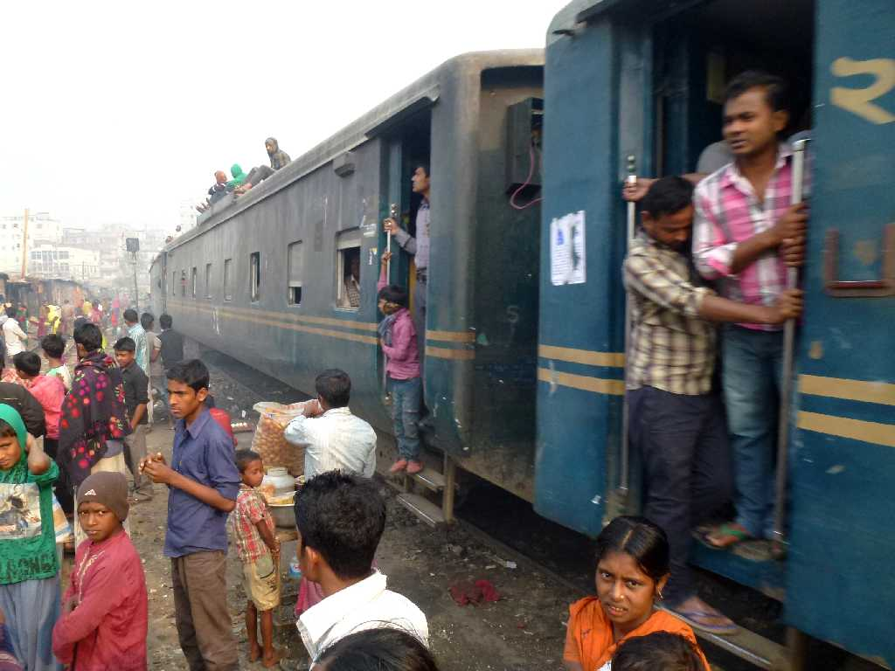
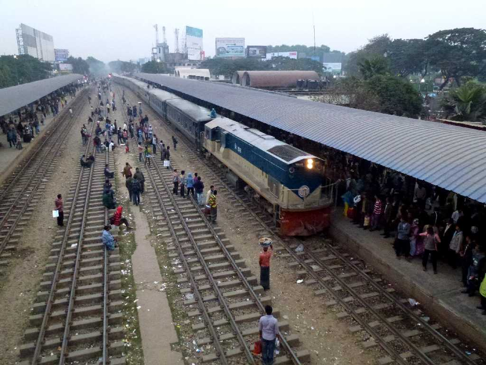

Kawran Bazar Dhaka
ダッカ最大のカウラン卸売市場

December 19 2013 Kawran Bazar Dhaka
カウラン卸売市場内にある線路上にも露天の店を出している

Railway Kawran Bazar Dhaka
カウラン卸売市場内の線路を通過する列車 通過直前に露天商は店をたたみ一時避難し通過後にまた店を開く

Airport Railway Station Dhaka
大混雑しているダッカ空港駅に入線して来る列車